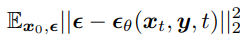
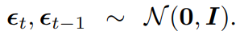
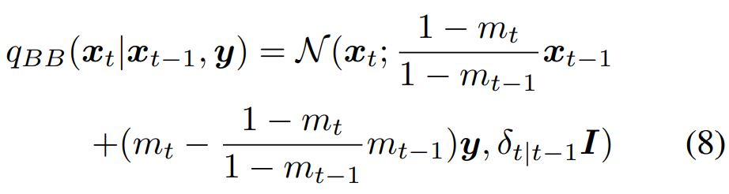
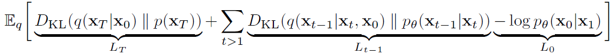

Information
Title: {BBDM: Image-to-image Translation with Brownian Bridge Diffusion Models}, {CVPR 2023}
Reference
Code: xuekt98/BBDM
Author: SeonHoon Kim
Edited by: SeonHoon Kim
Related Youtube: Youtube video
Last updated on Nov. 13, 2023
BBDM#
BBDM
BBDM 은 Brownian Bridge 를 Diffusion Model 에 도입한 최초의 모델
Image to Image Translation 분야에서 Conditional Diffusion Models 의 한계를 극복함
BBDM 을 이해하기 위해서는 Brownian motion process 와 Brownian Bridge 를 이해해야함. Brownian motion process 는 stochastic process 에 해당함.
Stochastic Process
시간의 흐름에 따라 불확실성을 가지고 변하는 확률 변수들의 집합
Stochastic process 는 \(X_t\) 와 같이 나타낼 수 있는데,
여기서 X 는 확률 변수를,
t 는 확률 변수가 관찰된 시간을 나타냄X 와 t 는 각각 Discrete 혹은 Continuous 로 구분할 수 있음
Discrete RANDOM VARIABLE & Discrete TIME
Discrete RANDOM VARIABLE & Continuous TIME
Continuous RANDOM VARIABLE & Discrete TIME
Continuous RANDOM VARIABLE & Continuous TIME
Brownian Motion Process (Wiener Process) 소개
Brownian Motion
유체의 미소입자가 불규칙하게 운동하는 현상
Fig. 310 굴뚝에서 퍼져나간 연기 사진을 오른쪽으로 90도 회전시킨 사진#
위 사진으로부터 Brownian motion process 를 직관적으로 이해해볼 수 있음.Brownian Motion Process (Wiener Process)
Brownian Motion 을 연속 시간 확률 과정으로 모델링한 것

Fig. 311 \(W_0\) = 0 이고 max time T=1000 인 Wiener Process 를 100번 Sampling 한 결과#
Brownian Motion Process (Wiener Process) 는
Continuous RANDOM VARIABLE & Continuous TIME 를 갖는 Stochastic Process 로,
\(W_t\) 와 같이 나타낸다.
Brownian Motion Process (Wiener Process) 를 이해해보자
가정해보자
\(t = 0 → W_t = W_0 = 0\) 이라고 하자.
쉽게 이해하기 위해, TIME t 가 Discrete 하다고 가정해보자.
(BBDM 은 t 를 정수 0~1000 으로 설정)
Requirements
Brownian Motion Process 는 Stochastic Process 이다.
TIME t 마다 stochasticity 가 부여되어야 한다.시간 간격과 W 의 변화량이 비례해야 한다.
(즉, 더 오래 지났을수록 더 많이 변한다.)
Notation
Fig. 312 Source : https://www.youtube.com/watch?v=ld0rxwAJpkM&ab_channel=finRGB#
\(\Delta t\) = 시간 간격
n = 살펴보고자 하는 시간 간격의 수
\(T = n * \Delta t\)
i.i.d \(\epsilon_t \sim N(0, 1)\)
\(\Delta W_t\) = t 시점에서 그 다음 시간 간격까지 증가한 W 의 값 \(= W_{t+\Delta t} - W_t\) = \(\epsilon_t \sqrt {\Delta t}\)
이해
\(\Delta W_t = W_{t+\Delta t} - W_t = \epsilon_t \sqrt {\Delta t}\) 라고 정의해 본 근거를 위의 Requirements 에서 찾아보면..
확률 변수 \(\epsilon\) 를 도입함으로써 stochasticity 부여
\(\Delta t\) 를 도입함으로써 시간 간격도 고려 가능
그렇다면 왜 하필 \(\sqrt {\Delta t}\) 를 곱했을까?
\(\Delta t\) 가 0 에 가까워질 때, \(\sqrt{\Delta t}\) 는 천천히 0 에 수렴함. 만약 TIME t 가 continuous 하다면, \(\Delta t\) 는 매우 작은 값이 됨. \(\Delta W_t = \epsilon_t {\Delta t}\) 라면 \(\Delta W_t\) 가 너무 작아짐.
\(\Delta t\) 가 커질 때, \(\sqrt{\Delta t}\) 는 천천히 커짐
주의할 사항
i.i.d \(\epsilon_t \sim N(0, 1)\) 이므로, \(\Delta W_t = \epsilon_t \sqrt {\Delta t}\) 에서 \(\Delta W_0\) 와 \(\Delta W_1\) 은 서로 독립인 것이 맞지만, \(W_0\) 과 \(W_1\) 이 독립이라는 말은 아님.
\(\Delta W_0 = \epsilon_0 \sqrt {\Delta t}\) 이므로, \(W_{\Delta t} = W_0 + \epsilon_0 \sqrt {\Delta t} = 0 + \epsilon_0 \sqrt {\Delta t} = \epsilon_0 \sqrt {\Delta t}\)
\(\Delta W_{\Delta t} = \epsilon_{\Delta t} \sqrt {\Delta t}\) 이므로, \(W_{2\Delta t} = W_{\Delta t} + \epsilon_{\Delta t} \sqrt {\Delta t} = (\epsilon_0 + \epsilon_{\Delta t}) * \sqrt {\Delta t}\)
\(Var(\Delta W_{\Delta t}) = Var(\epsilon_{\Delta t} \sqrt {\Delta t}) = Var(\epsilon_{\Delta t}) * \sqrt {\Delta t}^2 = 1 * \sqrt {\Delta t}^2 = \Delta t\)
\(\mathbb{E}(\Delta W_{\Delta t}) = \mathbb{E}(\epsilon_{\Delta t} \sqrt {\Delta t}) = \mathbb{E}(\epsilon_{\Delta t}) * \sqrt {\Delta t} = 0 * \sqrt {\Delta t} = 0\)
\(\Delta W_{T-\Delta t} = \epsilon_{T-\Delta t} \sqrt {\Delta t}\) \(W_T = (\epsilon_0 + \epsilon_{\Delta t} + \epsilon_{2\Delta t} + ... + \epsilon_{T-\Delta t}) * \sqrt {\Delta t}\)
\(\mathbb{E}(W_T) = 0\)
\(Var(W_T) = n * \Delta t = T\) (각각의 \(\epsilon\) 은 서로 i.i.d 이므로 공분산은 0)
즉, \(W_T \sim N(0,T)\)
Fig. 313 Source : https://www.youtube.com/watch?v=ld0rxwAJpkM&ab_channel=finRGB#
파란색 점들은, Brownian Motion Process 를 1번 Sampling 한 결과임 (one representation) 를 나타냄

Fig. 314 Source : https://www.youtube.com/watch?v=ld0rxwAJpkM&ab_channel=finRGB#
t=0 부터 t=T 까지 Wiener Process 를 수행하면,
\(W_t\) 는 \(W_T - W_0\) 만큼 변한다.\((W_T - W_0) \sim N(0, T-0)\)
\((W_{t_2}-W_{t_1}) \sim N(0,t_2-t_1)\)
ex. 5분 에서 10분으로 Wiener Process 를 진행하면, \(W_5\) 는 0 이 아닐 수 있으나, 그 변화량 \((W_{t_{10}}-W_{t_5})\) 은 N(0, 10 - 5) 를 따른다.
Brownian Bridge
X 가 Standard Wiener Process 라고 하자.
0 시점과 T 시점의 X 값을 알고,
0<t<T 일 때, 두 점을 선형으로 연결하는 Linear Bridge X(t) 는 다음과 같다.
Fig. 315 Brownian Bridge 이해를 위한 Linear Bridge#
Brownian Bridge 는 Standard Wiener Process 의 Conditional Probability Distribution 이다.
Starting state W(0) 과 Ending state W(T) 의 값에 Conditioned 되어 있다.
아래와 같이 정의될 수 있다.
Fig. 316 Brownian Bridge#
아래의 그림을 보면, 0 이라는 시작값과 123 이라는 마지막 값에 conditioned 되어 있는 것을 확인할 수 있다.
Brownian Bridge 의 분산은 0 에서 시작해서 증가하다가, T/2 시점에서 최대가 되었다가, 이후로는 감소하여 마지막엔 0 에 수렴하게된다.Fig. 317 \(W_0\) = 0 에서 \(W_1000\) = 123 까지 100개의 Brownian Bridge 를 샘플링한 결과#
Abstrcat

Fig. 318 Conditional Diffusion Models 와 BBDM 의 비교#
기존의 Diffusion 모델들은,
Image-to-Image 변환을 Conditional generation process 로 다룸.
이로 인해, 매우 상이한 도메인 사이의 변환에는 어려움이 있음.이를 해결하기 위해,
본 논문은 Brownian Bridge 에 기반한 Image-to-Image 변환 방법을 제시함BBDM 은 Conditional generation process 가 아닌
Stochastic Brownian Bridge Process 로 두 도메인 사이의 변환을 모델링하므로,
Bidirectional Diffusion Process 임.Brownian Bridge diffusion process 를 Image-to-Image 변환에 접목한 최초의 논문임
BBDM 모델의 훌륭한 성능을 실험적으로 증명함
{kind=link}
{kind=link}
{kind=link}
{kind=link}
{kind=link}
Introduction
I2I 변환에서 Non-diffusion models 의 한계
Pix2Pix 와 같은 conditional GANs 는 fideltiy 가 높았으나, 학습이 어렵고, DIversity 가 떨어진다.
Diversity 가 떨어지는 이유 : conditional GANs 는 input image 를 output image 에 one-to-one mapping 하는 방법을 학습하기 때문
VAE 같은 생성형 모델들은 GANs 만큼의 I2I 성능이 안나오고, Applicability 가 GANs 보다 떨어진다.
I2I 변환에서 conditional diffusion models 의 한계
conditional diffusion models 는 reference image 의 encoded feature 를 직접 U-Net 에 통합시킴으로써 diffusion models 의 reverse process 를 guide 함
하지만 이렇게 생성된 결과가 desired conditional distribution 을 추론해낸다는 명료한 이론적 근거가 없음
대부분의 conditional diffusion models 는 generalization 이 잘 안되므로, conditional input domain 과 output domain 이 유사한 몇몇 applications 에서만 잘 활용될 수 있음
ex. inpainting 혹은 super-resolution
LDM 이 latent space 에서 diffusion process 를 수행함으로써 generalization 을 개선하긴 했으나 여전히 conditional generation process 임
LDM 의 경우, 복잡한 attention mechanism 으로 multi-modal condition 이 주어지므로, 이론적 근거를 제시하기가 더 힘듦
본 논문에서 제안하는 BBDM 모델

Fig. 319 BBDM 의 아키텍쳐#
BBDM 모델은 input 과 output 도메인 간의 mapping 을 Brownian Bridge stochastic process 를 통해 구축함
가속을 위해 Latent space 에서 diffusion process 를 수행함
Related Work
2.1. Image-to-Image Translation
introduction 참고
2,2. Duffusion Models
Diffusion Models 의 simplified objective 를 잠깐 살펴보면, 다음과 같음.

Fig. 320 Diffusion Models 의 Simplified objective#
대부분의 conditional Diffusion Models 는 condition 을 objective 에 직접 “주입”.
아래의 그림을 보면, conditional input image y 가 삽입된 것을 볼 수 있음.
 Fig. 321 Conditional Diffusion Models 의 Simplified objective#
\(p(x_t|y)\) 가 objective 에 드러나 있지 않으므로, desired conditional distribution 에 도달할 수 있을 것이라는 이론적 보장이 없음
2.3. Brownian Bridge
Brownian Bridge 는 diffusion process 동안의 확률 분포가 starting state (t=0) 와 ending state (t=T) 에 conditioned 되어 있는, time stochastic model 임
Fig. 322 식(3)#
앞서 보았던 Brownian Bridge 의 평균과 분산을 구해보자.
위의 식과 같은 의미임을 알 수 있다.
Fig. 323 Brownian Bridge#
Method
3.1. Brownian Bridge Diffusion Model (BBDM)
Conditional diffusion models : Gaussian noise 를 향해 Forward process 진행
BBDM : conditional input y 자체를 향해 Brownian Bridge process 진행
Fig. 324 Conditional Diffusion Models 와 BBDM 의 비교#
VQGAN 의 latent space 에서 diffusion process 를 수행
x 가 A 도메인 영상의 latent features 이고,
y 가 B 도메인 영상의 latent features 일 때,
Forward diffusion process 는 다음과 같이 정의됨
Fig. 325 식(4)#
T 는 diffusion process 의 total steps 이다.
\(δ_t\) 는 분산이다.
식 (3) 에 나타난 분산 \(δ_t={t(T −t)\over T}\) 를 사용하게 되면, 가능한 최대 분산값은, middle step 인 \(T\over 2\) 에서의 분산값인 \(δ_{T\over 2} = {T \over 4}\) 가 됨
T 값이 커지면, 최대 분산값도 커지는데, 이 분산 값은 다루기에 너무 큼
\(x_0,y \sim N(0,I)\) 이면서 서로 독립일 때, Brownian Bridge diffusion process 를 위한 분산 scheduling 을 다음과 같이 해볼 수 있다.

Fig. 326 Brownian Bridge diffusion process 를 위한 분산 Scheduling#
만약 t 는 양의 정수의 discrete time 이고, 그 최댓값인 T=1000 이라면 \(\delta_t\) 는 아래 그림과 같게 된다.
Fig. 327 \(\delta_t\) 를 시각화한 결과#
\(m_t = t\overT\) 이고, \(\delta_t = 2(m_t - m_t^2)\) 이므로,
diffusion process 가 시작하는 t = 0 에서는, \(m_0\) = 0 이고, 평균은 \(x_0\) 이며 분산은 0 이 된다.
diffusion process 가 끝나는 t = T 에서는, \(m_T\) = 1 이고, 평균은 y 이고, 분산은 0 이 된다.
분산이, diffusion process 의 중간 지점까지는 최대 0.5 까지 증가하다가,
중간 지점부터 끝나는 지점까지는 0 으로 감소Brownian Bridge diffusion process 에서의 sampling diversity 는 최대 분산값,
즉 middle step 인 \(t = {T\over 2}\) 에서의 분산값에 의해 결정됨분산을 스케일링하는 변수 s 를 두어 sampling diversity 를 조절할 수 있다.
Fig. 328 식(5) : sampling diversity 조절을 위한 계수 s 가 포함된 분산 scheduling#
이 논문에서 s 의 디폴트 값은 1
3.1.1 Forward Process
식 (4) 에서는 step t 에서의 marginal distribution 만 제공
training 과 inference process 를 위해서는 forward transition probability 인 \(q_{BB}(x_t|x_{t-1}, y)\) 를 알아야함
식 (4) 에 의해, \(x_0\) 와 \(y\) 가 주어졌을 때의 \(x_t\) 와 \(x_{t-1}\) 은 다음과 같이 쓸 수 있음
Fig. 329 식(4)#

Fig. 330 식(6) & 식(7)#
참고. 위 식 (7) 의 \(m_ty\) 는 \(m_{t-1}y\) 로 쓰는 것이 옳음
 Fig. 331 \(\epsilon\) 은 i.i.d 하게 N(0, I) 를 따른다#
식 (6) 의 \(x_0\) 를 식 (7) 의 \(x_0\) 로 대체하면, Forward transition probability \(q_{BB}(x_t|x_{t-1}, y)\) 가 아래의 식 (8) 과 같이 유도됨
 Fig. 332 식(8)#
증명
식(7) 을 다음과 같이 쓸 수 있음
\(x_0 = {x_{t-1}-m_{t-1}y-\sqrt {\delta_{t-1}} \epsilon_{t-1} \over 1-m_{t-1}}\)
식(6) 의 \(x_0\) 에 위의 \(x_0\) 를 대입
\(x_t = {(1-m_t)x_{t-1} \over (1-m_{t-1})} - {(1-m_t)m_{t-1}y \over (1-m_{t-1})} - {(1-m_t)\sqrt {\delta_{t-1}}\epsilon_{t-1} \over (1-m_{t-1})} + m_ty + \sqrt{\delta_t} \epsilon_t\)
\(= {(1-m_t)x_{t-1} \over (1-m_{t-1})} + y(m_t - {(1-m_t) \over (1-m_{t-1})}m_{t-1}) + \sqrt {\delta_t}\epsilon_t - {(1-m_t)\sqrt {\delta_{t-1}}\epsilon_{t-1} \over (1-m_{t-1})}\)
이후, \(Var(x_t)\) 를 구하면, 아래의 \(\delta_{t|t-1}\) 와 같이 유도됨
Fig. 333 \(\delta_{t|t-1}\) 식#
t=T 가 될 때 \(m_T = 1\) 인데, 이때 식(8) 에 의해 \(x_T = y\) 임. ↓ ”아, Forward diffusion process 는 확실히.. A 도메인으로부터 B 도메인으로의 fixed mapping 을 정의하는구나”
3.1.2 Reverse Process
conditional diffusion models 의 reverse process 는,
Gaussian noise 로부터 시작하며,
매 스텝마다 조금씩 noise 를 제거해나감반면, BBDM 의 Brownian Bridge process 는 \(x_T = y\) 로 둠으로써,
conditional input 그 자체에서 Reverse process 를 시작함
Fig. 334 식(9)#
\(\mu_\theta (x_t,t)\) 는 U-Net 에 의해 예측된 노이즈 평균값이며, \(\tilde{\delta_t}\) 는 노이즈의 분산
DDPM 처럼, 임의의 parameters \(\theta\) 를 갖는 신경망 U-Net 은 \(\mu_\theta (x_t,t)\) 를 학습
3.1.3. Training Objective
참고.
예전 DDPM 의 Loss 는 다음과 같았음.
 Fig. 335 DDPM 의 Loss#
그리고, 이로부터 simplified 된 objective 는 다음과 같음
Fig. 336 DDPM 의 simplified objective#
Brownian Bridge diffusion process 의 ELBO
Fig. 337 식(10) : BBDM 의 ELBO#
첫 번째 term : \(x_T\) 가 곧 y 이므로 무시할 수 있음
세 번째 term : 매우 작은 값이 되므로 무시할 수 있음
베이즈 이론과 Markov chain property 를 식 (4) 와 식 (8) 에 적용하여, 다음과 같이 식 (11) 이 도출된다.
참고. Markovian Chain
\(q(x_t|x_{t-1}) = q(x_t|x_{t-1}, x_{t-2}, … , x_0)\)
Markov chain property 에 의해,
\(q_{BB}(x_t|x_{t-1},y) = q_{BB}(x_t|x_{t-1},x_0,y)\) 가 성립됨을 활용
식(4)
Fig. 338 식(4)#
식(8)
Fig. 339 식(8)#
식(11) & 식(13)
Fig. 340 식(11)#
Fig. 341 식(13)#
증명
\({q_{BB}(x_{t}|x_{t-1},y)q_{BB}(x_{t-1}|x_{0},y)\over q_{BB}(x_{t}|x_{0},y)}\)
\(= {{q_{BB}(x_{t},x_{t-1},y) \over q_{BB}(x_{t-1},y)} {q_{BB}(x_{t-1},x_{0},y) \over q_{BB}(x_{0},y)} \over {q_{BB}(x_{t},x_{0},y)\over q_{BB}(x_{0},y)}}\)
\(= q_{BB}(x_{t}|x_{t-1},y){q_{BB}(x_{t-1},x_{0},y)\over q_{BB}(x_{t},x_{0},y)}\)
\(= q_{BB}(x_{t}|x_{t-1},x_{0},y){q_{BB}(x_{t-1},x_{0},y)\over q_{BB}(x_{t},x_{0},y)}\)
\(= {q_{BB}(x_{t},x_{t-1},x_{0},y)\over q_{BB}(x_{t},x_{0},y)}\)
\(= q_{BB}(x_{t-1}|x_{t},x_{0},y)\)
위 식 (11) 의 평균은, 식 (12) 와 같이 정리됨
Fig. 342 식(12)#
식(4) 와 식(12) 를 통합하고 Reparameterization method 를 사용해서 \(\tilde {\mu_t}\) 를 다음과 같이 변형할 수 있음
Fig. 343 식(12) 의 변형#
참고. 식(4)
Fig. 344 식(4)#
하지만, 실제로 U-Net 은 전체 \(\tilde {\mu_t}\) 를 예측하는 것이 아니라, 노이즈를 예측하도록 학습됨.
이 내용을 식에 명시하기 위해, 식(9) 에 명시된 \(\mu_\theta\) 를 식(14) 와 같이 다시 써볼 수 있음.
\(x_t\) 와 y, 그리고 예측된 노이즈 \(\epsilon_\theta\) 의 linear combination 으로 다시 써보는 것임.
Fig. 345 식(9)#
Fig. 346 식(14)#
그런데, 아래 그림을 참고해보면 우리는 \(\tilde {\mu_t}\) 에 근사하도록 \(\mu_\theta\) 를 학습시켜야함.
Fig. 347 \(\tilde {\mu}_t\) 의 정리된 식#
즉, \(\epsilon_\theta (x_t,t)\) 가 \(m_t(y-x_0)+\sqrt {\delta_t}\epsilon\) 을 근사하도록 학습되어야하는 것임.
ELBO 의 두 번째 term 을 다시 살펴보면,
두 번째 term : \(D_{KL}(q_{BB}(x_{t-1}|x_t, x_0, y)||p_\theta (x_{t-1}|x_t,y))\)
\(arg \space min_\theta \space D_{KL}(q_{BB}(x_{t-1}|x_t, x_0, y)||p_\theta (x_{t-1}|x_t,y))\) =\(arg \space min_\theta \space (\tilde {\mu}_t(x_t,y) - \mu_\theta (x_t,y,t))\) =\(arg \space min_\theta \space (c_{\epsilon_t}(m_t(y-x_0) + \sqrt {\delta_t}\epsilon) - c_{\epsilon_t}\epsilon_\theta(x_t,t))\) =\(arg \space min_\theta \space (c_{\epsilon_t} (m_t(y-x_0) + \sqrt {\delta_t}\epsilon - \epsilon_\theta(x_t,t)))\)
따라서, ELBO 는 다음과 같이 단순화될 수 있음
Fig. 348 BBDM 의 Simplified ELBO#
Training Algorithm 정리
Fig. 349 Algorithm 1 : Training. 마치 DDPM 에서 그러했듯이, BBDM 도 실제 Loss 에는 Simplified ELBO 에서의 계수 \(C_{\epsilon_t}\) 가 빠진 것을 확인할 수 있다.#
3.2. Accelerated Sampling Processes
DDIM 과 비슷하게, BBDM 의 inference processes 도 non-Markovian process 를 사용해서 가속시킬 수 있음
Sampling steps 의 길이를 S 라고 두었을 때, inference process 는 latent varibales \(x_{1:T}\) 의 subset 에 의해 다음과 같이 정의됨
latent varibales \(x_{1:T}\) 의 subset
Fig. 350 latent varibales \(x_{1:T}\) 의 subset#
inference process
Fig. 351 inference process#
Sampling Algorithm
Fig. 352 Algorithm 2 : Sampling#
본 논문에서는 S 값의 디폴트를 200 으로 두었음
Experiments
4.1. Experiment Setup
모델 & 하이퍼마라미터
BBDM 프레임워크는 pretrained VQGAN 과 BBDM 으로 이루어짐
Latent Diffusion Model 에서 사용된 것과 같은 pretrained VQGAN 을 사용
training stage 에서의 time steps 는 1,000
inference stage 에서의 sampling steps 는 200
Evaluation
FID 와 LPIPS 사용
생성물의 diversity 를 평가하기 위해서, 하나의 conditional input y 마다 5개의 샘플을 생성하고, 각 픽셀 마다의 표준편차의 평균을 구함. 그 후 전체 test 데이터셋에 대해서 평균 냄.
Datasets
BBDM 의 I2I 변환 능력을 평가하기 위해서, 여러 task 로 실험함
Semantic Synthesis 능력을 CelebAMask-HQ dataset 으로 실험
semantic layout 만 주고 photorealistic 한 images 를 생성해내는 능력 평가
sketch-to-photo 능력을 edges2shoes 와 edges2handbags 로 실험
edges 만 주고 realistic images 생성해내는 능력 평가
style transfer 능력을 faces2comics 로 실험
위 두 실험은 서로 상이한 domains 간의 변환 능력을 평가했다면, Style transfer 실험에서는 서로 비슷한 domains 간의 I2I 변환 능력을 평가
4.2. Qualitative Comparison
Fig. 353 Figure 3. CelebAMask-HQ 데이터셋에 대한 추론 결과#
Fig. 354 Figure 4. 다른 Image-to-Image 변환 task 에 대한 추론 결과#
Fig. 355 Figure 5. 다른 Image-to-Image 변환 task 에 대한 추론 결과#
Pix2Pix 는 지도 학습 방식으로 학습하므로, 괜찮은 결과를 냄
반면 CycleGAN 은 작은 스케일의 데이터셋에서는 성능이 떨어짐
DRIT++ 은 GAN 기반 모델들 중에서는 좋은 성능을 냈으나, 변환된 이미지들이 oversmoothed 되어 있었고, ground truth distribution 과는 거리가 멀었음
conditional diffusion model 인 CDE 와 LDM 은 GAN 기반 모델들보다는 좋은 성능을 냈으나, conditional information 에 큰 영향을 받음
Figure 3 의 첫 번째 줄을 보면 irregular occlusions 가 나타나는데, CDE 와 LDM 은 이에 큰 영향을 받음
반면 BBDM 은 두 도메인 간의 직접적인 diffusion process 를 학습하므로 이러한 문제로부터 자유로움
또한 Brownian Bridge 의 stochastic 한 특성으로 인해 fidelity 와 diversity 가 높은 이미지들을 생성해냄
4.3. Quantitative Comparison
Table 1 과 2 를 보면, BBDM 이 모든 실험에서 가장 좋은 FID 값을 기록했으며, 훌륭한 LPIPS 값을 기록함
Fig. 356 Table 1. CelebAMask-HQ 데이터셋에 대한 FID, LPIPS 성능은 BBDM 이 가장 뛰어남#
Fig. 357 Table 2. BBDM 은 FID, LPIPS 점수가 매우 뛰어났음#
4.4. 다른 Translation Tasks
BBDM 의 generalization 성능을 검증하기 위해서, 다른 tasks 에 대해서도 실험했음
아래 그림과 같이, 다른 tasks 에서도 camparable 한 성능을 기록함
Fig. 358 Figure 6. Face-to-label, 색상화, inpainting 등의 다른 tasks 에서도 뛰어난 성능을 기록함#
4.5. Ablation Study
pre-trained latent space 의 영향
Fig. 359 Table 3. BBDM 은 LDM 에 비해 Downsampling factor 에 대해 robust 했음#
BBDM 과 LDM 에 대해서, VQGAN downsampling factor 를 각각 4, 8, 16 으로 두고 성능 비교 실험 수행
BBDM 은 down sampling factor 에 robust 했음
Sampling steps 의 영향
Sampling steps 가 작을 때 (200 이하) 는, 조금만 늘려도 성능이 크게 증가
Fig. 360 Table 4. 200 이상의 Sampling Steps 에서는 Steps 를 키워도 성능 변화가 미미함#
Brownian Bridge 의 maximum variance 의 영향
Fig. 361 Table 5. Sampling diversity 조절 계수에 의해 실제로 Diversity 가 조절 되었음#
식 (5) 에 나타난 것처럼, scaling factor s 의 값을 변경함으로써, Brownian Bridge 의 최대 분산값 (t = T/2 일 때의 분산값) 조절 가능. 이렇게 diversity 조절 가능.
Fig. 362 식(5)#
Conclusion and Future Work
Brownian Bridge 에 기반한 새로운 I2I 변환 방법 제시
이 방법은 기존의 conditional 한 방법과 달리, Brownian Bridge diffusion process 를 통해 두 도메인 간의 mapping 을 직접 학습
여러 tasks 에서의 실험을 통해 BBDM 의 성능 검증
text-to-image 와 같은 multi-modal tasks 에도 BBDM 을 적용해볼 예정
{kind=link}
{kind=link}
{kind=link}
{kind=link}
{kind=link}
{kind=link}
{kind=link}
{kind=link}
{kind=link}
{kind=link}
{kind=link}
{kind=link}
{kind=link}
{kind=link}
{kind=link}
{kind=link}
{kind=link}
{kind=link}
{kind=link}
{kind=link}
{kind=link}
{kind=link}
{kind=link}
{kind=link}
{kind=link}
{kind=link}
{kind=link}
{kind=link}
{kind=link}
{kind=link}
{kind=link}